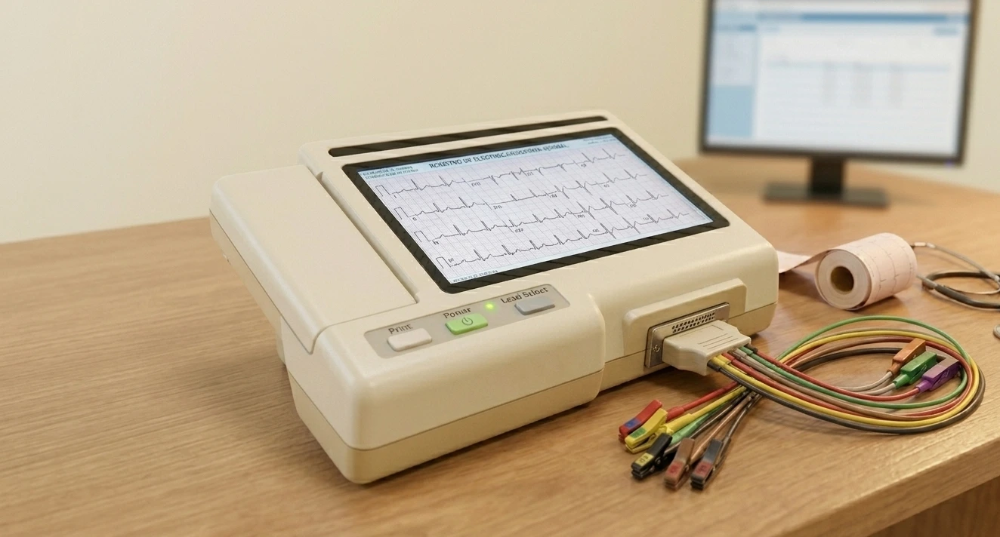

Pruebas diagnósticas · Clínica Elche Salud
Valoración rápida de la actividad eléctrica del corazón

El electrocardiograma es la prueba diagnóstica más habitual en cardiología. Registra la actividad eléctrica del corazón a través de electrodos colocados sobre la piel del tórax, los brazos y las piernas, y proporciona información inmediata sobre el ritmo, la frecuencia y el estado del músculo cardíaco.
Para que la información sea fiable, tanto la técnica de realización como la interpretación médica deben ser correctas. Un ECG bien analizado por un especialista puede revelar alteraciones que pasan desapercibidas en una lectura rápida.
El corazón funciona gracias a impulsos eléctricos que siguen un circuito específico. Primero se activan las aurículas —que recogen la sangre— y después los ventrículos, que la bombean al resto del cuerpo. El ECG captura este recorrido eléctrico latido a latido y permite detectar si el circuito funciona con normalidad o si hay alguna alteración en su origen, velocidad o propagación.
Es la primera prueba ante cualquier síntoma cardiovascular: palpitaciones, dolor en el pecho, mareo, síncope o disnea. También forma parte de cualquier valoración cardiológica de rutina, del seguimiento de enfermedades cardíacas conocidas y de la valoración preoperatoria en pacientes de riesgo. En la consulta se realiza en el mismo acto y los resultados se explican de inmediato.
Post visual con todo lo que el cardiólogo analiza en un ECG — explicado de forma clara y con imágenes.
Si te han hecho un electrocardiograma y tienes preguntas sobre el resultado, podemos revisarlo juntos en consulta.
Estudio de la estructura y función del corazón mediante ultrasonidos.
Ver más → PruebaMonitorización cardíaca continua de 24 horas para detectar arritmias.
Ver más → PruebaEvaluación de la respuesta cardíaca bajo exigencia física controlada.
Ver más →